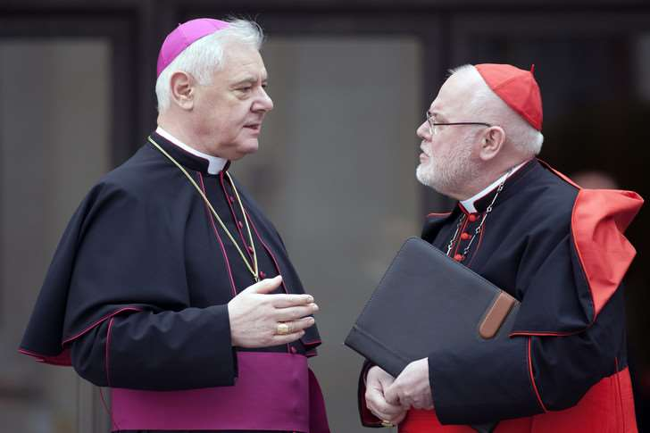

Marie Malzac, pour La-Croix.com, le 02/02/2017
La Conférence épiscopale allemande a publié mercredi 1er février ses orientations sur l’application de l’exhortation apostolique du pape François sur la famille Amoris Laetitia, dans lesquels ils détaillent notamment la possibilité de l’accès aux sacrements pour les couples divorcés remariés.

Mgr Gerhard Ludwig MULLER (g), préfet de la Congrégation pour la doctrine de la foi, et Mgr Reinhard MARX, archevêque de Munich et président de la Conférence épiscopale allemande, lors du consistoire extraordinaire des cardinaux réunis en vue de la préparation du synode sur la famille au Vatican le 20 février 2014 / Alessia GIULIANI/CPP/CIRIC
Alors que l’exhortation apostolique Amoris Laetitia suscite toujours, près d’un an après sa parution, un vif débat dans l’Église quant à son interprétation, les évêques allemands réaffirment dans un texte diffusé le 1er février, la possibilité de l’accès aux sacrements pour les couples divorcés remariés, dans certains cas et après un temps de discernement. L’épiscopat allemand, présidé par le cardinal Reinhard Marx, archevêque de Munich et Freising, membre de C9, est un des premiers, avec les évêques argentins de la région de Buenos Aires et les Maltais, à s’exprimer collectivement sur ce texte pontifical consacré à la famille, fruit de deux Synodes.
> À LIRE: L’interprétation du chapitre 8 d’Amoris laetitia par les évêques de la région de Buenos Aires
Les directives allemandes interviennent le même jour que la publication dans le mensuel italien « d’apologétique » Il Timone d’une interview du cardinal allemand Gerhard Ludwig Müller, préfet de la Congrégation pour la doctrine de la foi, dans laquelle il met en garde contre les « interprétations confuses » proposées par certains évêques de l’exhortation Amoris laetitia, notamment en ce qui concerne les divorcés remariés. Sans se rallier aux quatre cardinaux frondeurs auteurs des « dubia » sur Amoris Laetitia, avec lesquels il avait pris ses distances, le gardien du dogme catholique se démarque pourtant aussi des lectures du texte soutenues par le pape lui-même et le Saint-Siège.
« Aucune règle générale ni automatisme »
Dans un document intitulé « La joie de l’amour dans la famille est aussi la joie de l’Église: Introduction à une pastorale renouvelée du mariage et de la famille à la lumière d’Amoris laetitia », approuvé le 23 janvier au cours de leur Conseil permanent et publié mercredi 1er février sur leur site Internet, les évêques allemands donnent des orientations sur « la préparation au mariage », « l’accompagnement des couples » et « le renforcement de la famille comme lieu d’apprentissage de la foi ». Ils consacrent également la quatrième et dernière partie de leur texte à la manière de « Faire face à la fragilité ». « Malgré toute la bonne volonté des époux et, malgré toute la préparation au mariage, il arrive que les relations se brisent », notent-ils, en soulignant la souffrance que représente pour eux cet échec et pour leurs enfants. Les évêques allemands reviennent sur la question de l’accès aux sacrements pour les divorcés remariés civilement, un thème qu’ils avaient abordé à plusieurs reprises et de différentes façons pendant les deux assemblées du synode sur la famille. « Les évêques ne voient aucune règle générale et aucun automatisme. Selon eux, il faut plutôt des solutions différenciées qui prennent en compte chaque cas particulier », indique le texte.
> À LIRE: Entretien avec le cardinal Schönborn sur Amoris Laetitia
La fameuse note de bas de page 336 du chapitre 8 du texte du pape François, soulignent les évêques, indique qu’il peut exister des conséquences sacramentelles « différentes » pour des situations différentes au niveau de la « faute » dans l’échec du mariage.
Donner des critères de discernement
Les évêques allemands rappellent qu’il existe « des solutions différenciées », parmi lesquelles la reconnaissance de nullité du mariage, et encouragent les fidèles qui ont « un doute fondé sur la validité de leur mariage à prendre en considération le service des juges ecclésiastiques pour vérifier si un nouveau mariage à l’Église est possible ». À défaut, les évêques explicitent aussi ce « processus de discernement accompagné par un pasteur » évoqué par la note 351 de l’exhortation. « À la fin d’un tel processus spirituel, qui sert toujours l’intégration, l’accès aux sacrements de la pénitence et de l’Eucharistie n’est pas systématique. La décision individuelle, de ne pas ou pas encore être en mesure de les recevoir dans les circonstances particulières, mérite respect et attention. Mais une décision de recevoir ces sacrements doit aussi être respectée », écrivent les évêques allemands. Fidèle à l’exhortation, la Conférence des évêques allemands souhaite éviter à la fois « une attitude laxiste – sans examen minutieux de l’accompagnement, du discernement et de l’intégration – comme rigoriste, qui arrête un jugement rapide sur les personnes placées dans des situations dites irrégulières ».
> À LIRE: Contre tout légalisme, Amoris Laetitia appelle au discernement
« Au lieu de ces attitudes extrêmes, l’appréciation (lat. « Discretio ») doit passer par un dialogue personnel », estiment-ils. « Notre tâche est d’approfondir la formation de la conscience des fidèles. À cet effet, il est nécessaire de fournir à nos pasteurs des critères. Ces critères pour une formation de la conscience sont fournis de façon globale et excellente par le pape dans Amoris Laetitia », assurent les évêques, en citant les paragraphes 298 à 300.
> À LIRE: Amoris Laetitia, une nouvelle approche des divorcés remariés
Marie Malzac
Texte repris du site La-Croix.com, mis en ligne sur Academia.edu, le 2 février 2017